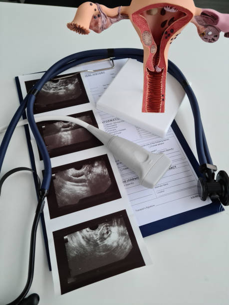

At Sachren IVF, we utilize advanced 3D ultrasound technology combined with Doppler imaging to provide comprehensive evaluations in fertility and IVF treatments. This powerful combination allows for detailed visualization of reproductive organs and assessment of blood flow, which are crucial for optimizing fertility treatments and improving pregnancy outcomes.
3D Ultrasound
- Uterine Abnormalities:Congenital conditions like septate uterus or acquired issues such as fibroids or polyps can be precisely diagnosed, which is essential for tailoring fertility treatments.
- Ovarian Health:3D ultrasound can effectively monitor ovarian follicles, detect cysts, and assess overall ovarian health, aiding in the planning of ovulation induction or IVF cycles.
- Endometrial Assessment:The thickness and appearance of the endometrial lining can be evaluated with greater accuracy, which is critical for embryo implantation.
Doppler Ultrasound:
Doppler ultrasound is a specialized technique that measures blood flow within the reproductive organs. When combined with 3D imaging, it provides crucial insights into the vascular health of the uterus and ovaries, including:
- Endometrial Blood Flow: Adequate blood flow to the endometrium is a key factor for successful embryo implantation. Doppler ultrasound assesses the quality of blood flow, helping to determine the optimal timing for embryo transfer.
- Ovarian Blood Flow: TMonitoring blood flow to the ovaries can offer insights into follicle development and ovarian reserve, which are essential for evaluating the response to fertility medications.

Why Choose Sachren orthopaedic hospital and IVF center
Sachren orthopaedic hospital and ivf center IVF is equipped with state-of-the-art 3D ultrasound and Doppler imaging technology, ensuring that our patients receive the highest standard of care. Our expert team utilizes these advanced tools to tailor fertility treatments, monitor progress, and enhance the likelihood of achieving a successful pregnancy. Including images on the webpage, such as 3D ultrasound scans of the uterus or ovaries and Doppler blood flow assessments, can visually demonstrate the technology’s capabilities and help patients understand the benefits of these advanced techniques. If you would like to include specific images or examples, we could design a visual guide highlighting how these technologies are used in practice at Sachren orthopaedic hospital and IVF center.
Begin Your Journey with Sachren orthopaedic hosiptal and IVF Centre
Your journey to parenthood starts here. Contact Us at +918530046800/+918530064800 today to schedule a consultation or visit our state-of-the-art facility. Together, we can help you achieve the dream of building your family.
"Book an appointment today and let us help you achieve your dream of parenthood!"